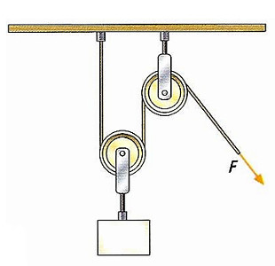

La Polea
Una polea es un dispositivo mecánico de tracción o elevación, formado por una rueda (también denominada roldana) montada en un eje, con una cuerda que rodea la rueda.
Polea Fija
Para elevar la carga, la fuerza que se ejerce tiene que ser mayor o igual que la resistencia. En este caso, la polea gira, pero sin moverse de su sitio, es una polea fija.
F = R
F = fuerza; R = resistencia
Si por ejemplo se quiere levantar un peso de 100 Kg se deberá ejercer una fuerza de 100 Kg o más.
Polea Móvil
En este caso se divide por dos la fuerza realizada, pero es necesario tener el doble de cuerda.
F = R/2
F = fuerza; R = resistencia
Es decir, que si se quiere levantar el mismo peso de 100 Kg, en este caso la carga cuelga de la polea móvil, y se reparte entre las dos cuerdas.
Es decir, la mitad de peso lo soporta el tronco y la otra mitad quien levanta el objeto. Por lo cual sólo hay que ejercer una fuerza de 50 Kg
Mantenimiento de las poleas
- Luego de usarla limpia cuidadosamente cada una de sus partes.
- Coloca unas gotas de aceite entre el eje y la roldana, así como en el seguro del gancho, si lo tiene.
- Guárdala en un lugar seco, preferiblemente en una bolsa.